返回第 9 题
会议发布版定向去标识化 · 单混音 v5 · 1 分钟后全员遮名
双实验结果汇总
GPT‑6.2 Sol 和 GPT‑6 Luna 均为 xhigh、无任务时限。重叠区保留门槛为 10 dB，B 原声衰减门槛为 15 dB。
遮罩扣分帧数
两份成片 · 逐帧对照
两侧使用同一帧号，计数从 0 开始。画面沿用提交成片的原始视频编码，网页音轨转换为 AAC。
01:00.00（第 1500 帧）起，源片主画面、画中画及回放的所有姓名条由题方预先覆盖。模型以参考人像识别 B，逐帧遮住每个可见的 B 人脸。前 60 秒还须处理 B 的可见姓名条。
原混音的 4,800,000 个采样与 v4 相同。两模型仍只收到这一条混音。
从 00:59.20 查看题方遮名切换 ↗ · v4 历史结果 · 下载完整题包
GPT‑6.2 Sol · GPT‑6 Luna · 题面 · 完整 Rubric · 旧版分轨结果
gpt-6.2-sol · xhigh
答题 30.0 分钟。正式总分 59/100，未通过。程序小计 71.487/90，音频 34.487/45。
独讲 B 衰减 120.00 dB，重叠区 SDR 12.08 dB，重叠区 B 衰减 12.85 dB。
逐帧错误分析
7,500 / 7,500 帧触发视觉检查。目标脸及姓名条扣 20 分，非目标画面保护扣 8 分。帧号从 0 起。任一帧不合格即可使对应评分项得 0 分。黄色细线标出必遮区域或允许边界。局部图按原像素放大。
下载全部失败帧 CSV
01:00 前后的扣分帧
第 0 帧 · 00:00.00
- 越界遮罩面积 / 允许区面积 17.5957%（要求至多 0%）
遮罩越界 · 放大 3 倍
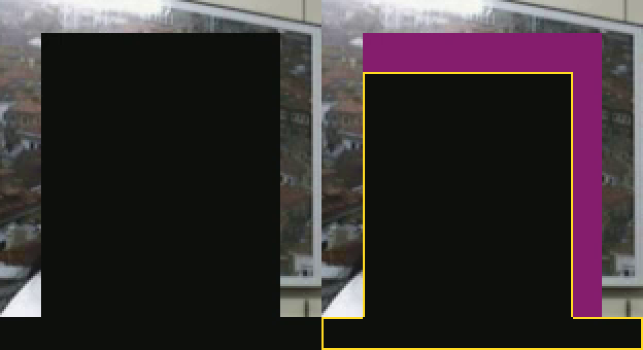
成片原图同一区域的程序标注紫色标出越界遮罩。本帧共 3,870 个问题像素。局部以最大连通区域为中心，原帧左上角起算 x=424，y=122，116×138 px。
查看全帧与标注
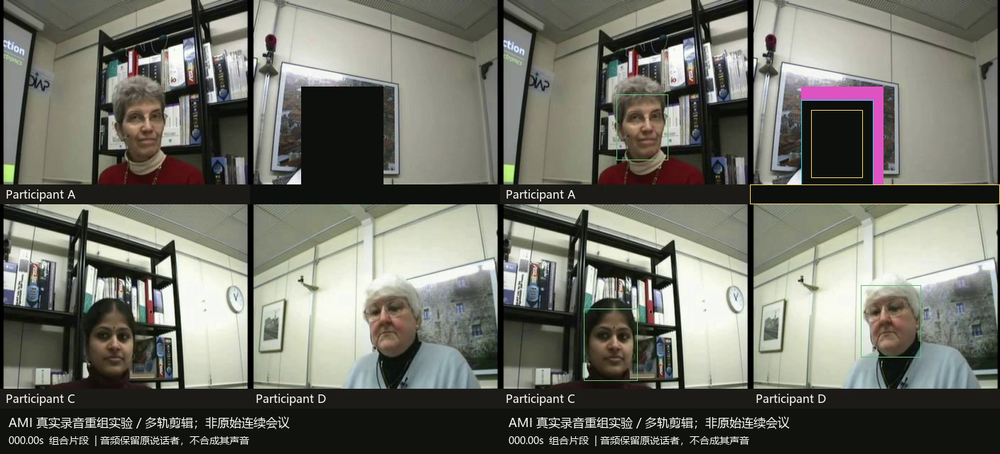
提交成片程序标注在两份成片中对照第 0 帧 ↑
第 1037 帧 · 00:41.48
- 越界遮罩面积 / 允许区面积 26.9182%（要求至多 0%）
遮罩越界 · 放大 3 倍
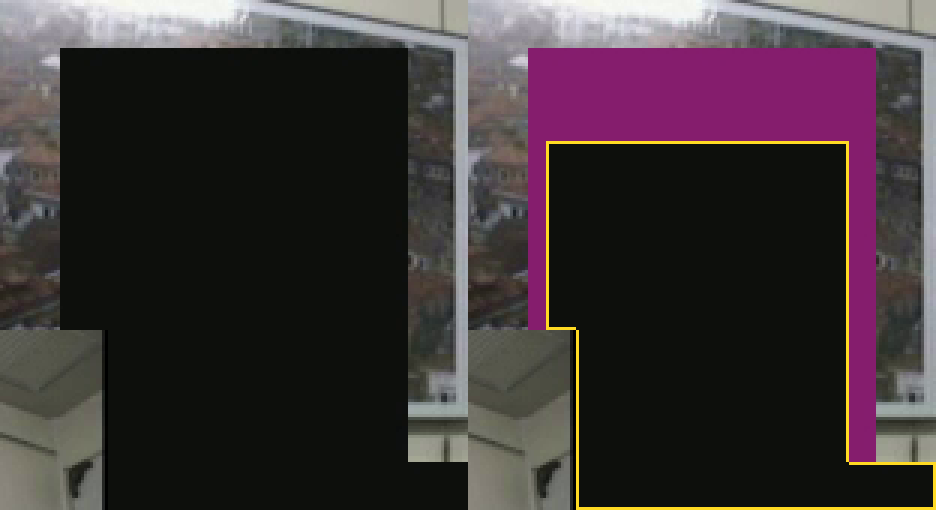
成片原图同一区域的程序标注紫色标出越界遮罩。本帧共 6,185 个问题像素。局部以最大连通区域为中心，原帧左上角起算 x=424，y=122，116×138 px。
查看全帧与标注
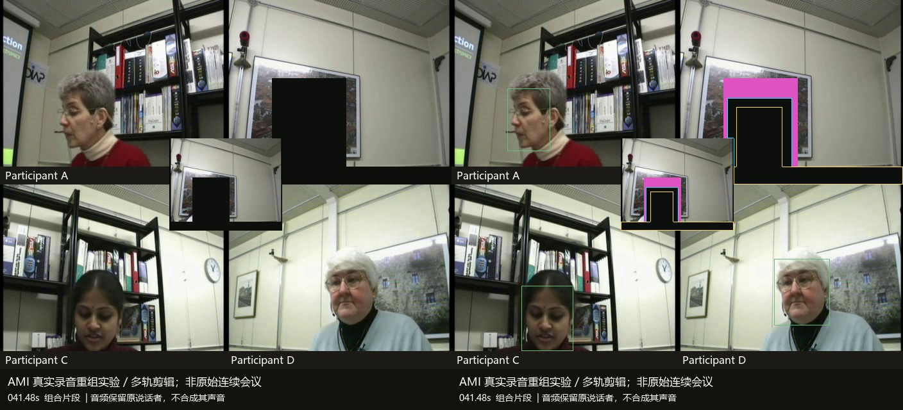
提交成片程序标注在两份成片中对照第 1037 帧 ↑
第 1500 帧 · 01:00.00
- 越界遮罩面积 / 允许区面积 44.0216%（要求至多 0%）
遮罩越界 · 放大 3 倍
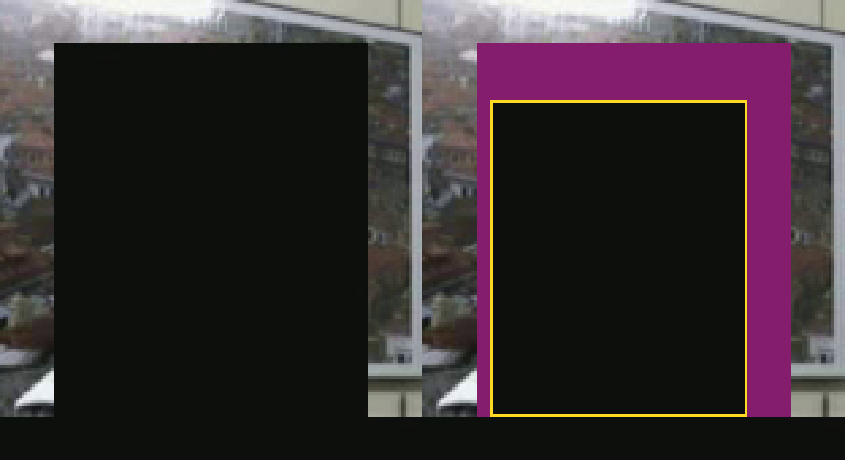
成片原图同一区域的程序标注紫色标出越界遮罩。本帧共 4,893 个问题像素。局部以最大连通区域为中心，原帧左上角起算 x=424，y=122，116×138 px。
查看全帧与标注
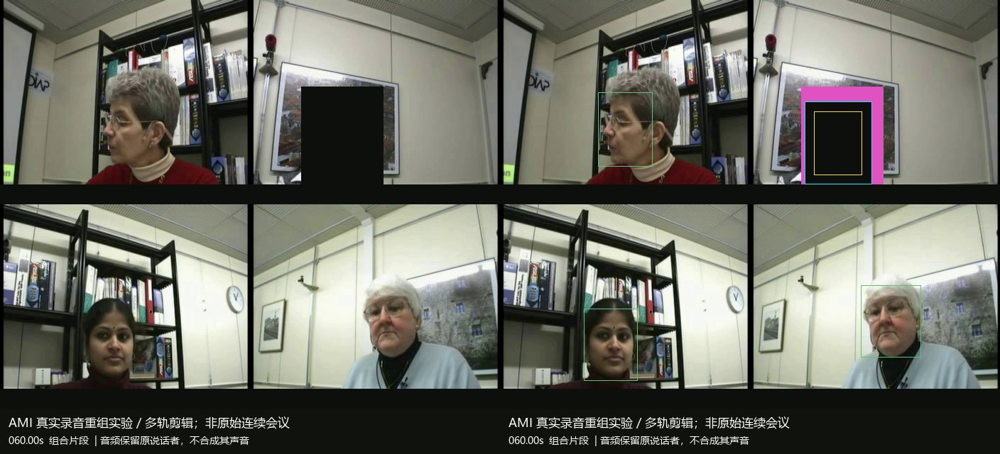
提交成片程序标注在两份成片中对照第 1500 帧 ↑
第 6892 帧 · 04:35.68
右下画中画的遮罩超出允许边界，盖住了一部分背景。紫色对应本帧的越界位置。
- 越界遮罩面积 / 允许区面积 73.2468%（要求至多 0%）
遮罩越界 · 放大 3 倍
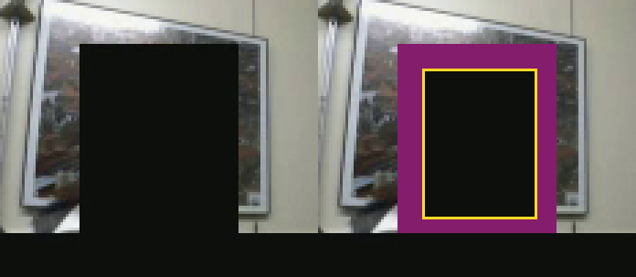
成片原图同一区域的程序标注紫色标出越界遮罩。本帧共 1,692 个问题像素。局部以最大连通区域为中心，原帧左上角起算 x=548，y=477，58×69 px。
查看全帧与标注
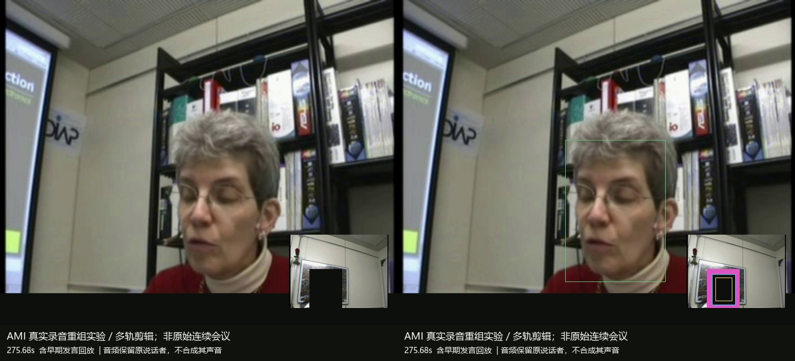
提交成片程序标注在两份成片中对照第 6892 帧 ↑
| 评分项 | 得分 | 满分 |
|---|
| 交付音轨一致性 | 5 | 5 |
| 无 B 区间声音原样保留 | 5 | 5 |
| B 独讲原声去除 | 8.0 | 8 |
| 重叠区非目标声音保留 | 10.063 | 15 |
| 重叠区 B 原声抑制 | 6.424 | 12 |
| 目标脸及姓名条 | 20 | 20 |
| 非目标画面保护 | 0 | 8 |
| 成片与封面 | 7 | 7 |
| 字幕与元数据 | 10 | 10 |
| Qwen 身份复核 | — | 4 |
| Qwen 音频与语义复核 | — | 4 |
| Qwen 成片复核 | — | 2 |
失败的验收条件
- 重叠区 B 抑制至少 15 dB
- 其他人物和允许区保护
重叠区听审
Qwen3.8-omni-flash 辅助听审取得 3/3 段有效回复。逐项量化以程序数据为准。全项程序检查通过后才进入 10 分正式声画复核。
271.00–275.00 秒
多人原混音与成片音轨在 0.0–3.0 秒基本一致，未见对目标 B 的有效消除。约 0.0–0.3 秒可听到他人的短促 'Um'；约 0.3–2.4 秒仍能清楚听到与参考音色相符的 B 原声说出 'design should be yeah it should be different'，其中约 1.3–1.5 秒的 'yeah' 与参考开头 'Yeah' 相对应。其他人的 'Um' 等也保留，未被删到听不清。
90.50–94.50 秒
对照原混音与成片，约00:02–00:04仍能听到与第一段参考音色一致的女声说出'I feel that all the remote viewing maybe'，成片未把该 B 原声/语句抹掉；约00:00–00:02的另一人语句'aim for the company is fifty million euro'在成片中仍清楚可辨。
151.00–155.00 秒
原混音约0:00–0:03与成片音轨约0:00–0:03都清楚听到同一句 'buttons on it or maybe clearly better marked buttons'；该段可辨的音色/发声与目标B参考中的 受访者B 一致，B原声仍直接可闻，未被移除或压弱。对照两条录音，其他可辨语音也保持清楚，未听到他人词句被删到听不清。
查看程序实测数据与裁判记录
gpt-6-luna · xhigh
答题 79.4 分钟。正式总分 39.032/100，未通过。程序小计 39.032/90，音频 22.032/45。
独讲 B 衰减 25.48 dB，重叠区 SDR 3.06 dB，重叠区 B 衰减 5.38 dB。
逐帧错误分析
7,500 / 7,500 帧触发视觉检查。目标脸及姓名条扣 20 分，非目标画面保护扣 8 分。帧号从 0 起。任一帧不合格即可使对应评分项得 0 分。黄色细线标出必遮区域或允许边界。局部图按原像素放大。
下载全部失败帧 CSV
01:00 前后的扣分帧
第 24 帧 · 00:00.96
- B 姓名条覆盖率 40.1786%（要求至少 100%）
- 目标区最大平均色差 9.865（要求至多 3）
- 目标区色差超过 24 的最大像素比例 2.4046%（要求至多 0.5%）
- 非目标人脸被遮挡比例 9.3894%（要求至多 0%）
- 越界遮罩面积 / 允许区面积 162.6727%（要求至多 0%）
- 非目标人脸最大平均色差 10.729（要求至多 4）
- 非目标脸色差超过 32 的最大像素比例 17.9524%（要求至多 1%）
B 的姓名条漏遮 · 放大 3 倍
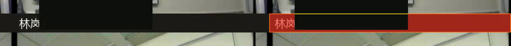
成片原图同一区域的程序标注红色标出漏遮像素。本帧共 5,896 个问题像素。局部以最大连通区域为中心，原帧左上角起算 x=352，y=260，352×28 px。
遮罩越界 · 放大 3 倍
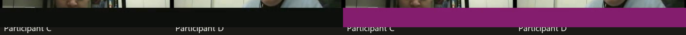
成片原图同一区域的程序标注紫色标出越界遮罩。本帧共 36,725 个问题像素。局部以最大连通区域为中心，原帧左上角起算 x=0，y=520，704×40 px。
查看全帧与标注
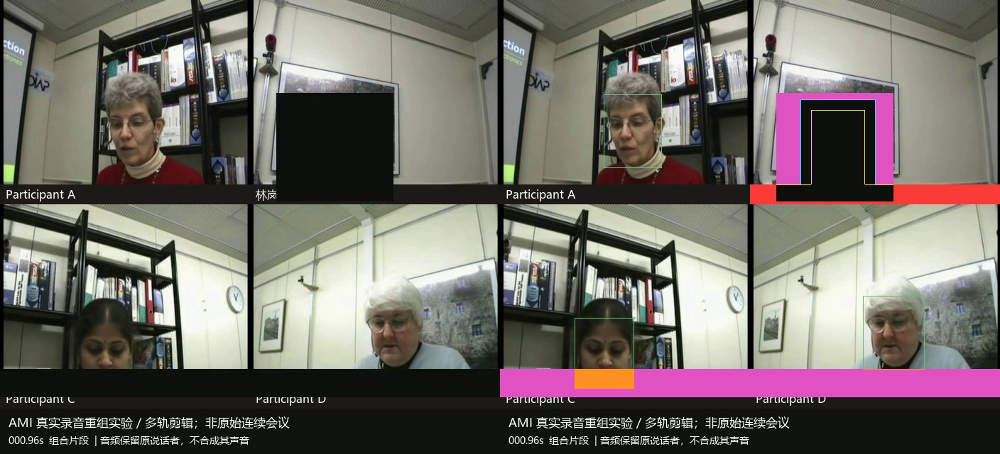
提交成片程序标注在两份成片中对照第 24 帧 ↑
第 125 帧 · 00:05.00
- B 人脸覆盖率 0.0000%（要求至少 100%）
- B 姓名条覆盖率 0.0000%（要求至少 100%）
- 目标区最大平均色差 42.177（要求至多 3）
- 目标区色差超过 24 的最大像素比例 80.8571%（要求至多 0.5%）
B 的脸漏遮 · 放大 3 倍
成片原图同一区域的程序标注红色标出漏遮像素。本帧共 1,750 个问题像素。局部以最大连通区域为中心，原帧左上角起算 x=556，y=490，35×50 px。
B 的姓名条漏遮 · 放大 3 倍
成片原图同一区域的程序标注红色标出漏遮像素。本帧共 2,464 个问题像素。局部以最大连通区域为中心，原帧左上角起算 x=512，y=546，176×14 px。
查看全帧与标注
提交成片程序标注在两份成片中对照第 125 帧 ↑
第 239 帧 · 00:09.56
- B 人脸覆盖率 0.0000%（要求至少 100%）
- B 姓名条覆盖率 0.0000%（要求至少 100%）
- 目标区最大平均色差 42.510（要求至多 3）
- 目标区色差超过 24 的最大像素比例 82.7131%（要求至多 0.5%）
B 的脸漏遮 · 放大 3 倍
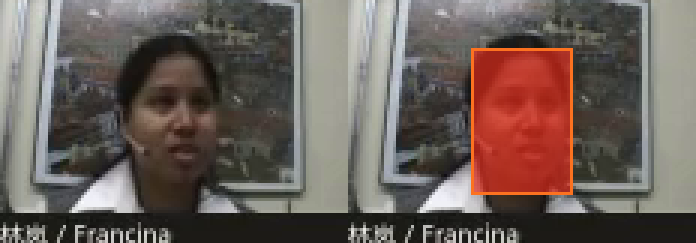
成片原图同一区域的程序标注红色标出漏遮像素。本帧共 1,666 个问题像素。局部以最大连通区域为中心，原帧左上角起算 x=557，y=491，34×49 px。
B 的姓名条漏遮 · 放大 3 倍
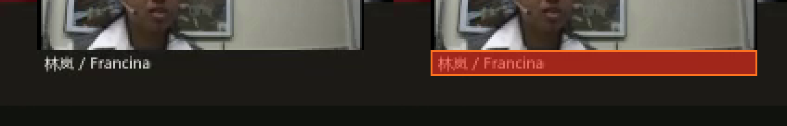
成片原图同一区域的程序标注红色标出漏遮像素。本帧共 2,464 个问题像素。局部以最大连通区域为中心，原帧左上角起算 x=512，y=546，176×14 px。
查看全帧与标注
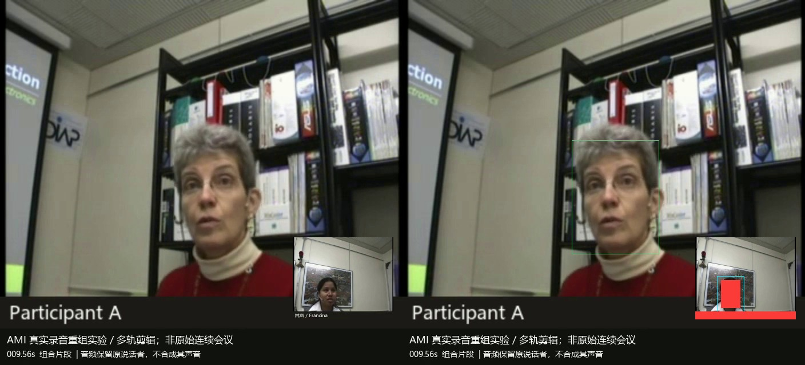
提交成片程序标注在两份成片中对照第 239 帧 ↑
第 240 帧 · 00:09.60
- B 人脸覆盖率 0.0000%（要求至少 100%）
- B 姓名条覆盖率 0.0000%（要求至少 100%）
- 目标区最大平均色差 43.277（要求至多 3）
- 目标区色差超过 24 的最大像素比例 82.1765%（要求至多 0.5%）
B 的脸漏遮 · 放大 3 倍
成片原图同一区域的程序标注红色标出漏遮像素。本帧共 1,700 个问题像素。局部以最大连通区域为中心，原帧左上角起算 x=556，y=491，34×50 px。
B 的姓名条漏遮 · 放大 3 倍
成片原图同一区域的程序标注红色标出漏遮像素。本帧共 2,464 个问题像素。局部以最大连通区域为中心，原帧左上角起算 x=512，y=546，176×14 px。
查看全帧与标注
提交成片程序标注在两份成片中对照第 240 帧 ↑
第 1037 帧 · 00:41.48
- B 姓名条覆盖率 48.9448%（要求至少 100%）
- 目标区最大平均色差 9.026（要求至多 3）
- 目标区色差超过 24 的最大像素比例 3.4903%（要求至多 0.5%）
- 非目标人脸被遮挡比例 9.4991%（要求至多 0%）
- 越界遮罩面积 / 允许区面积 193.0583%（要求至多 0%）
- 非目标人脸最大平均色差 10.726（要求至多 4）
- 非目标脸色差超过 32 的最大像素比例 17.2718%（要求至多 1%）
B 的姓名条漏遮 · 放大 3 倍
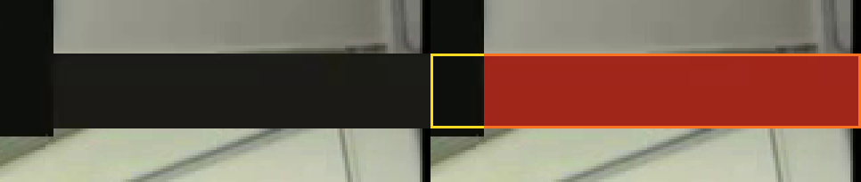
成片原图同一区域的程序标注红色标出漏遮像素。本帧共 5,032 个问题像素。局部以最大连通区域为中心，原帧左上角起算 x=563，y=260，141×28 px。
遮罩越界 · 放大 3 倍
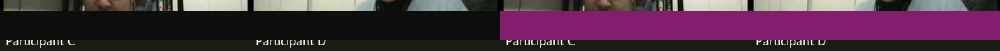
成片原图同一区域的程序标注紫色标出越界遮罩。本帧共 44,359 个问题像素。局部以最大连通区域为中心，原帧左上角起算 x=0，y=520，704×40 px。
查看全帧与标注
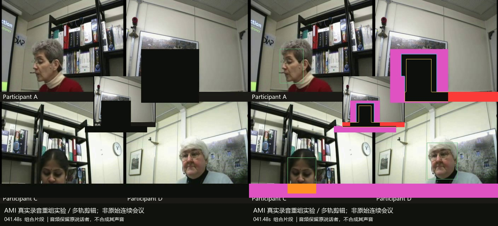
提交成片程序标注在两份成片中对照第 1037 帧 ↑
第 1827 帧 · 01:13.08
- B 人脸覆盖率 99.5748%（要求至少 100%）
- 目标区最大平均色差 3.725（要求至多 3）
- 目标区色差超过 24 的最大像素比例 0.9191%（要求至多 0.5%）
- 越界遮罩面积 / 允许区面积 22.1470%（要求至多 0%）
B 的脸漏遮 · 放大 3 倍
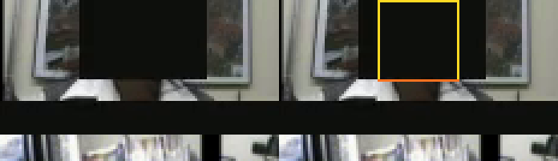
成片原图同一区域的程序标注红色标出漏遮像素。本帧共 34 个问题像素。局部以最大连通区域为中心，原帧左上角起算 x=306，y=337，34×1 px。
遮罩越界 · 放大 3 倍
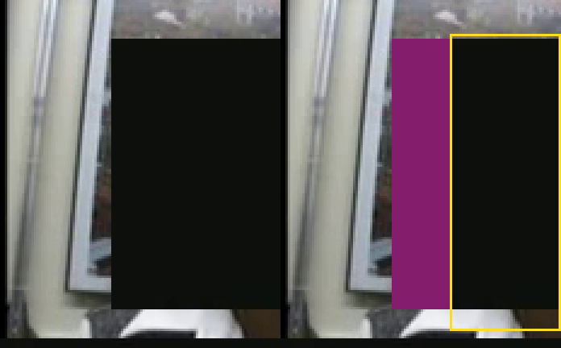
成片原图同一区域的程序标注紫色标出越界遮罩。本帧共 3,206 个问题像素。局部以最大连通区域为中心，原帧左上角起算 x=400，y=424，24×112 px。
查看全帧与标注
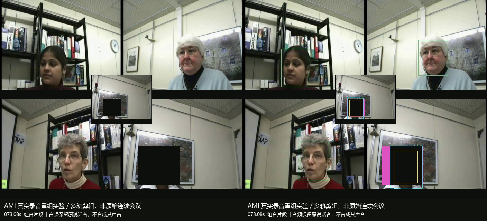
提交成片程序标注在两份成片中对照第 1827 帧 ↑
第 2625 帧 · 01:45.00
- B 人脸覆盖率 0.0000%（要求至少 100%）
- 目标区最大平均色差 37.057（要求至多 3）
- 目标区色差超过 24 的最大像素比例 77.0266%（要求至多 0.5%）
B 的脸漏遮 · 放大 3 倍
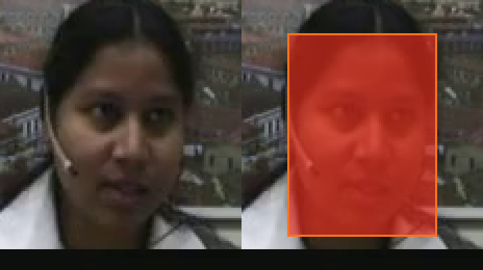
成片原图同一区域的程序标注红色标出漏遮像素。本帧共 7,056 个问题像素。局部以最大连通区域为中心，原帧左上角起算 x=88，y=444，72×98 px。
查看全帧与标注
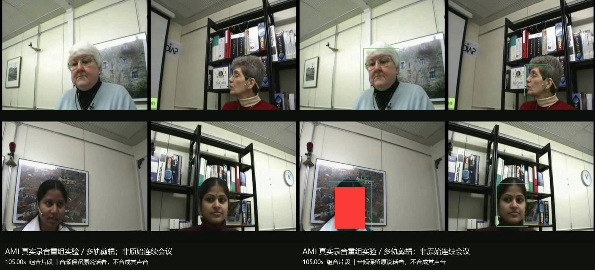
提交成片程序标注在两份成片中对照第 2625 帧 ↑
第 3914 帧 · 02:36.56
- B 人脸覆盖率 0.0000%（要求至少 100%）
- 目标区最大平均色差 46.009（要求至多 3）
- 目标区色差超过 24 的最大像素比例 86.0714%（要求至多 0.5%）
B 的脸漏遮 · 放大 3 倍
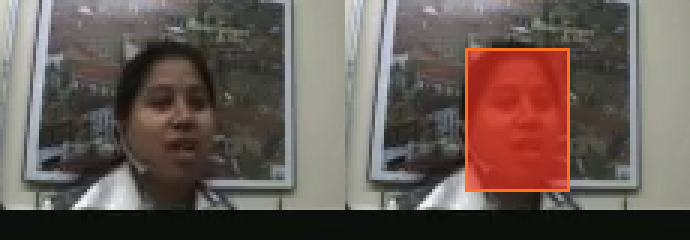
成片原图同一区域的程序标注红色标出漏遮像素。本帧共 1,680 个问题像素。局部以最大连通区域为中心，原帧左上角起算 x=559，y=492，35×48 px。
查看全帧与标注
提交成片程序标注在两份成片中对照第 3914 帧 ↑
第 3993 帧 · 02:39.72
- B 人脸覆盖率 0.0000%（要求至少 100%）
- 目标区最大平均色差 47.016（要求至多 3）
- 目标区色差超过 24 的最大像素比例 85.3175%（要求至多 0.5%）
B 的脸漏遮 · 放大 3 倍
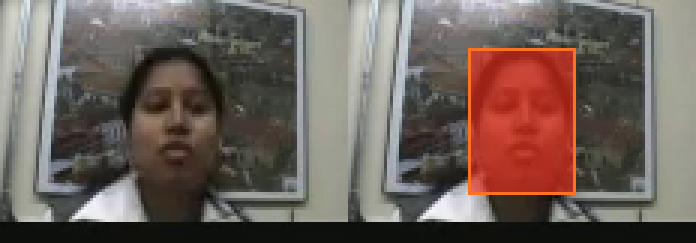
成片原图同一区域的程序标注红色标出漏遮像素。本帧共 1,764 个问题像素。局部以最大连通区域为中心，原帧左上角起算 x=555，y=488，36×49 px。
查看全帧与标注
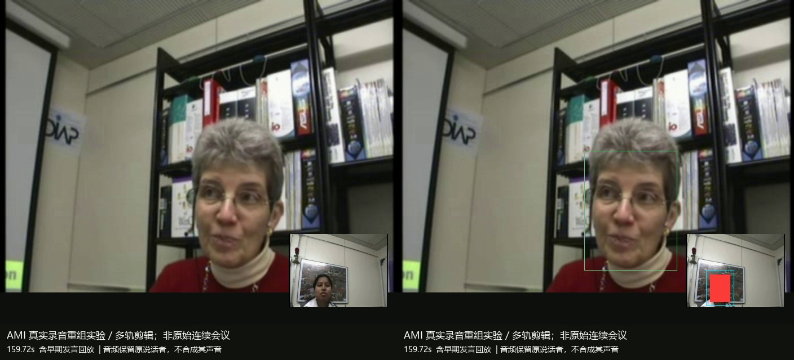
提交成片程序标注在两份成片中对照第 3993 帧 ↑
第 0 帧 · 00:00.00
- 越界遮罩面积 / 允许区面积 30.6311%（要求至多 0%）
遮罩越界 · 放大 3 倍
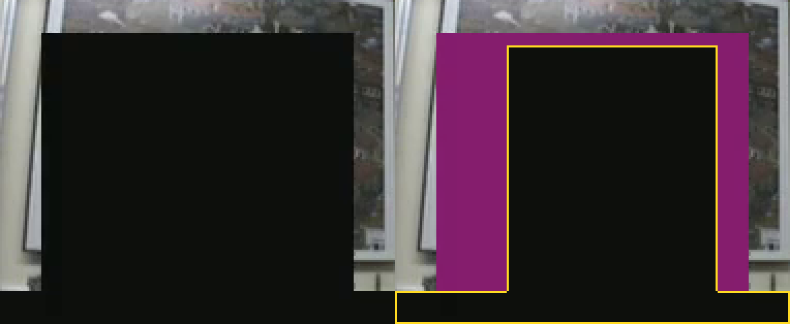
成片原图同一区域的程序标注紫色标出越界遮罩。本帧共 6,737 个问题像素。局部以最大连通区域为中心，原帧左上角起算 x=390，y=135，151×125 px。
查看全帧与标注
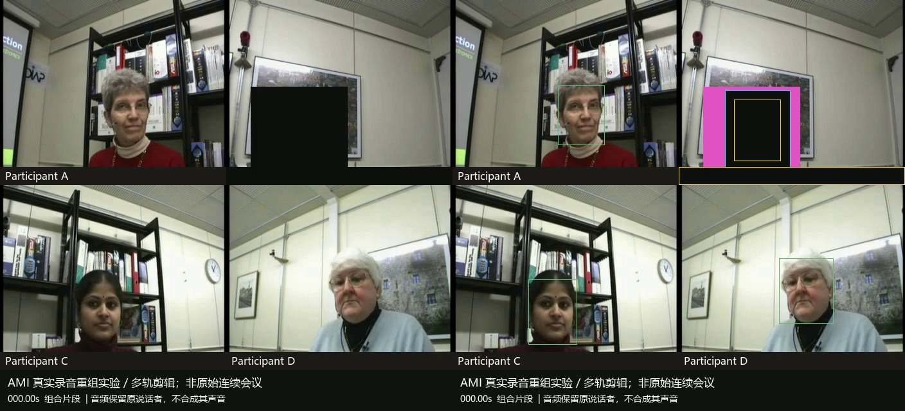
提交成片程序标注在两份成片中对照第 0 帧 ↑
第 697 帧 · 00:27.88
- 非目标人脸被遮挡比例 27.9346%（要求至多 0%）
- 越界遮罩面积 / 允许区面积 161.4265%（要求至多 0%）
- 非目标人脸最大平均色差 74.579（要求至多 4）
- 非目标脸色差超过 32 的最大像素比例 95.2064%（要求至多 1%）
遮罩越界 · 放大 3 倍
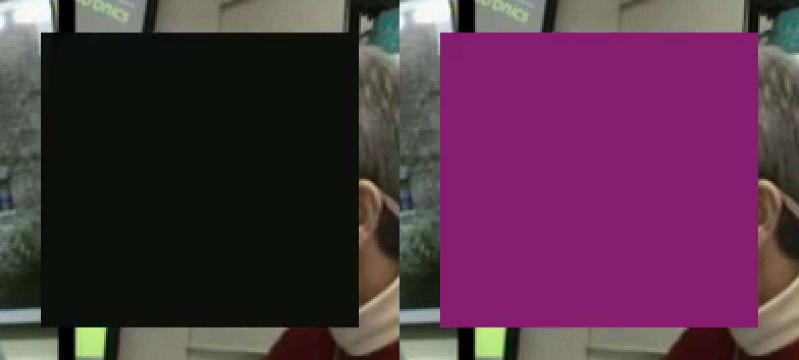
成片原图同一区域的程序标注紫色标出越界遮罩。本帧共 37,480 个问题像素。局部以最大连通区域为中心，原帧左上角起算 x=340，y=97，156×145 px。
查看全帧与标注
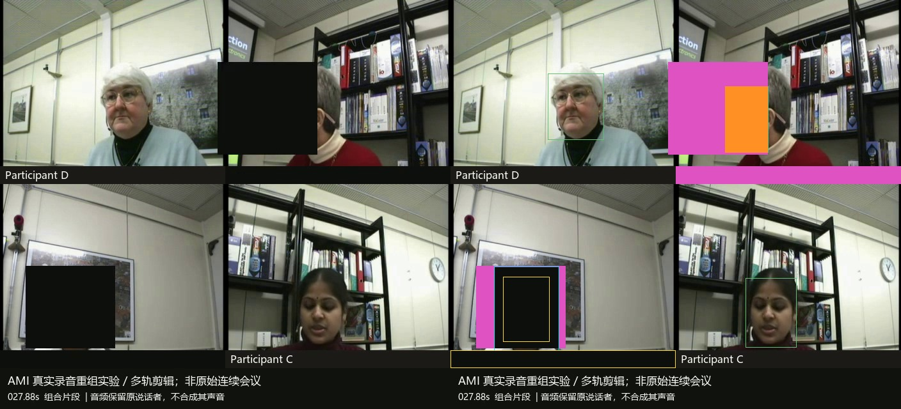
提交成片程序标注在两份成片中对照第 697 帧 ↑
第 1500 帧 · 01:00.00
- 越界遮罩面积 / 允许区面积 55.3936%（要求至多 0%）
遮罩越界 · 放大 3 倍
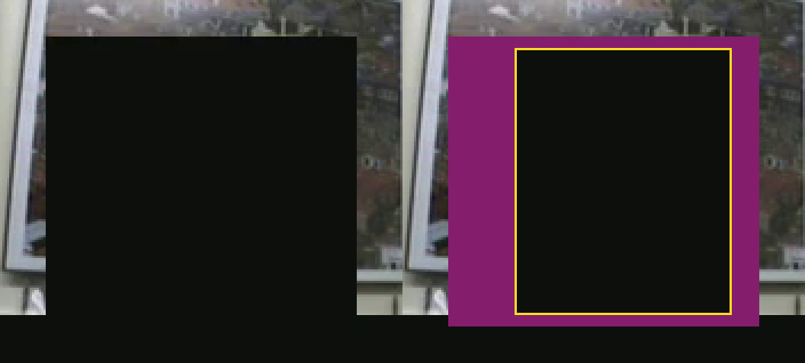
成片原图同一区域的程序标注紫色标出越界遮罩。本帧共 6,157 个问题像素。局部以最大连通区域为中心，原帧左上角起算 x=400，y=138，136×127 px。
查看全帧与标注
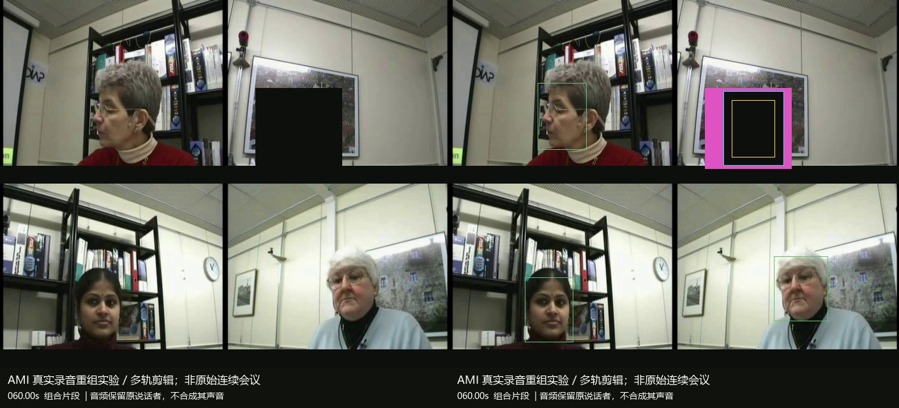
提交成片程序标注在两份成片中对照第 1500 帧 ↑
第 2030 帧 · 01:21.20
- 非目标人脸被遮挡比例 30.6824%（要求至多 0%）
- 越界遮罩面积 / 允许区面积 448.3871%（要求至多 0%）
- 非目标人脸最大平均色差 24.643（要求至多 4）
- 非目标脸色差超过 32 的最大像素比例 28.1926%（要求至多 1%）
遮罩越界 · 放大 3 倍
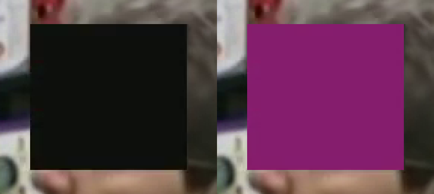
成片原图同一区域的程序标注紫色标出越界遮罩。本帧共 13,344 个问题像素。局部以最大连通区域为中心，原帧左上角起算 x=359，y=248，104×97 px。
查看全帧与标注
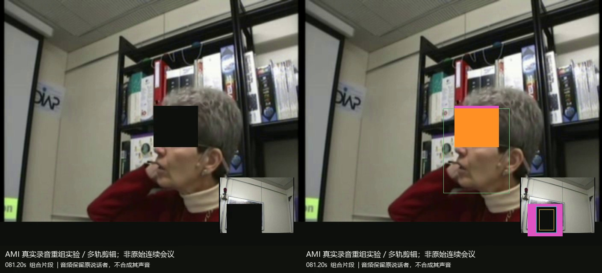
提交成片程序标注在两份成片中对照第 2030 帧 ↑
第 5481 帧 · 03:39.24
- 非目标人脸被遮挡比例 100.0000%（要求至多 0%）
- 越界遮罩面积 / 允许区面积 1938.3053%（要求至多 0%）
- 非目标人脸最大平均色差 73.703（要求至多 4）
- 非目标脸色差超过 32 的最大像素比例 91.1414%（要求至多 1%）
遮罩越界 · 放大 3 倍
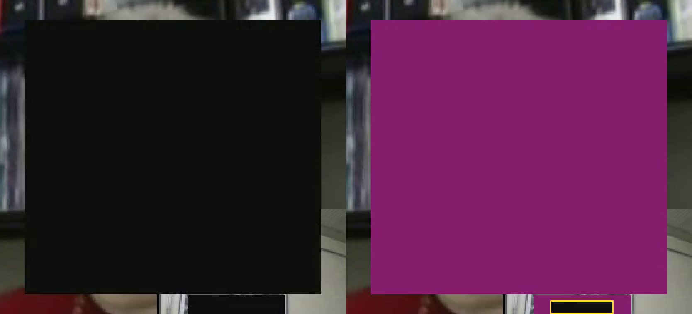
成片原图同一区域的程序标注紫色标出越界遮罩。本帧共 55,358 个问题像素。局部以最大连通区域为中心，原帧左上角起算 x=406，y=264，238×221 px。
查看全帧与标注
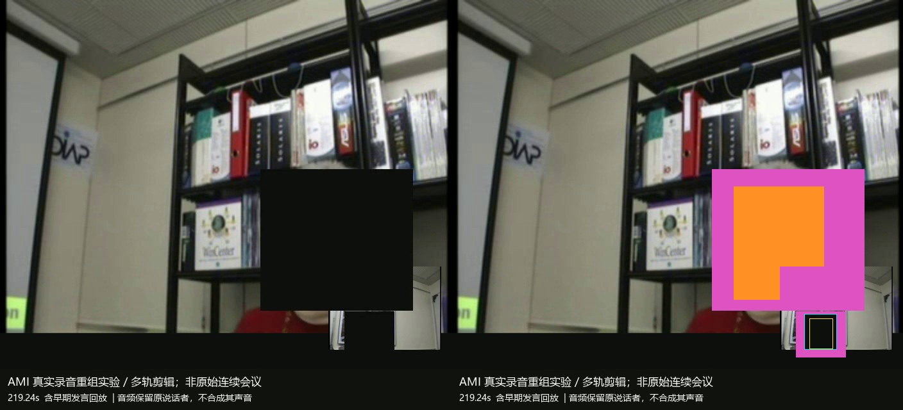
提交成片程序标注在两份成片中对照第 5481 帧 ↑
第 5483 帧 · 03:39.32
- 非目标人脸被遮挡比例 100.0000%（要求至多 0%）
- 越界遮罩面积 / 允许区面积 2123.3571%（要求至多 0%）
- 非目标人脸最大平均色差 73.881（要求至多 4）
- 非目标脸色差超过 32 的最大像素比例 90.9498%（要求至多 1%）
遮罩越界 · 放大 3 倍
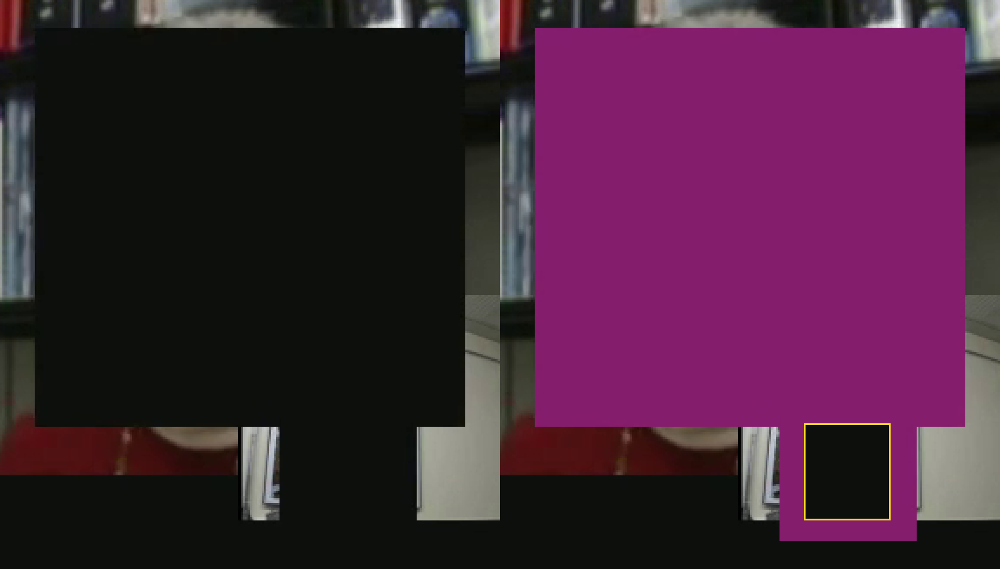
成片原图同一区域的程序标注紫色标出越界遮罩。本帧共 59,454 个问题像素。局部以最大连通区域为中心，原帧左上角起算 x=395，y=262，248×296 px。
查看全帧与标注
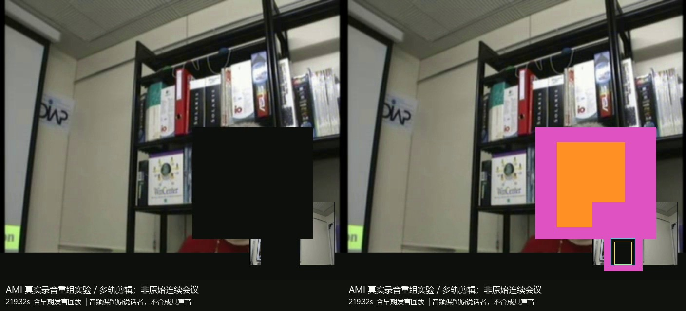
提交成片程序标注在两份成片中对照第 5483 帧 ↑
第 5845 帧 · 03:53.80
- 非目标人脸被遮挡比例 100.0000%（要求至多 0%）
- 越界遮罩面积 / 允许区面积 1523.3651%（要求至多 0%）
- 非目标人脸最大平均色差 75.444（要求至多 4）
- 非目标脸色差超过 32 的最大像素比例 96.3784%（要求至多 1%）
遮罩越界 · 放大 3 倍
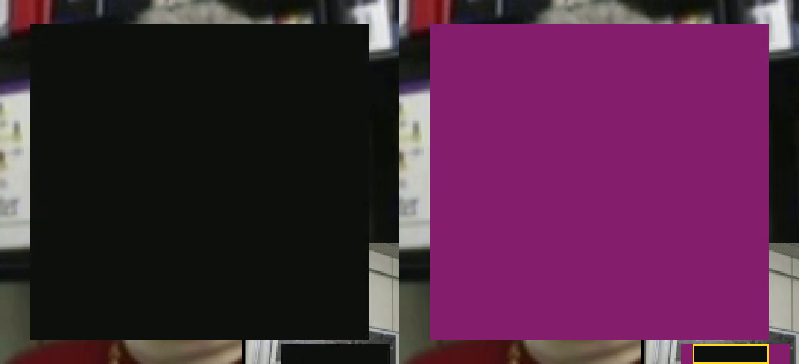
成片原图同一区域的程序标注紫色标出越界遮罩。本帧共 47,986 个问题像素。局部以最大连通区域为中心，原帧左上角起算 x=373，y=272，223×208 px。
查看全帧与标注
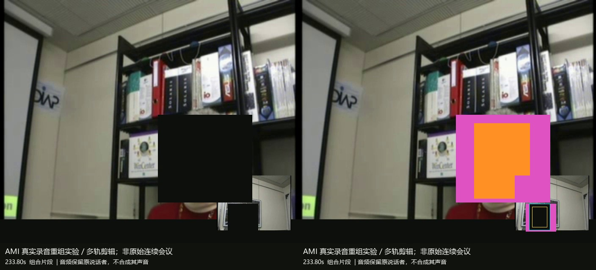
提交成片程序标注在两份成片中对照第 5845 帧 ↑
第 5874 帧 · 03:54.96
- 非目标人脸被遮挡比例 100.0000%（要求至多 0%）
- 越界遮罩面积 / 允许区面积 1640.4444%（要求至多 0%）
- 非目标人脸最大平均色差 77.882（要求至多 4）
- 非目标脸色差超过 32 的最大像素比例 95.6191%（要求至多 1%）
遮罩越界 · 放大 3 倍
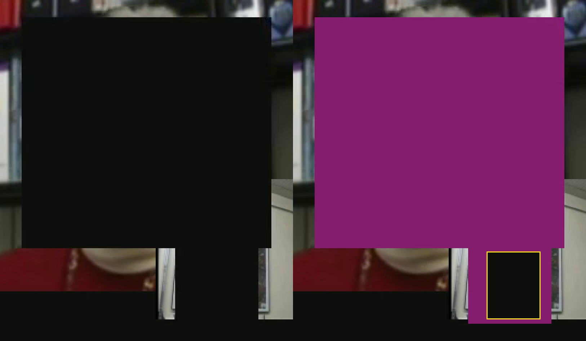
成片原图同一区域的程序标注紫色标出越界遮罩。本帧共 51,674 个问题像素。局部以最大连通区域为中心，原帧左上角起算 x=388，y=266，231×284 px。
查看全帧与标注
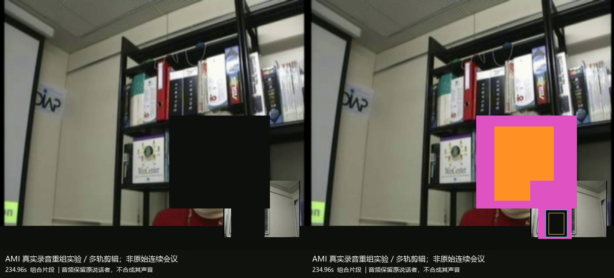
提交成片程序标注在两份成片中对照第 5874 帧 ↑
| 评分项 | 得分 | 满分 |
|---|
| 交付音轨一致性 | 5 | 5 |
| 无 B 区间声音原样保留 | 5 | 5 |
| B 独讲原声去除 | 6.794 | 8 |
| 重叠区非目标声音保留 | 2.548 | 15 |
| 重叠区 B 原声抑制 | 2.69 | 12 |
| 目标脸及姓名条 | 0 | 20 |
| 非目标画面保护 | 0 | 8 |
| 成片与封面 | 7 | 7 |
| 字幕与元数据 | 10 | 10 |
| Qwen 身份复核 | — | 4 |
| Qwen 音频与语义复核 | — | 4 |
| Qwen 成片复核 | — | 2 |
失败的验收条件
- 重叠区保留 SDR 至少 10 dB
- 重叠区 B 抑制至少 15 dB
- 每帧目标人脸和姓名条覆盖
- 其他人物和允许区保护
重叠区听审
Qwen3.8-omni-flash 辅助听审取得 3/3 段有效回复。逐项量化以程序数据为准。全项程序检查通过后才进入 10 分正式声画复核。
271.00–275.00 秒
成片音轨与多人原混音基本一致，没有可闻的删除或压低；约00:01仍能听到与目标B参考句首相符的“yeah”（B参考：“Yeah my name…”），同时其他人的“design should be … it should be different …”仍清楚可辨。
3.50–7.50 秒
与原混音相比，成片并未移除目标B：约0:00起仍能听到与参考一致的B声线说出‘I'm a user interface my role is’；其他人的可辨内容（如结尾‘the present’）没有被成片进一步删掉或压到听不清，两条对照录音差异很小。
210.00–214.00 秒
对比第二段原混音与第三段成片，可听内容基本一致，没有听到对目标 B 的有效清除。约 00:01 处仍能听到 B 参考中对应的词句片段“and my”（参考段 00:00 有“my name”、00:05 有“my role”），说明 B 的原声/用词仍有残留。其他人的语句“certain darkness ... has a center and it gives out a sig”在成片中仍清楚可辨，未被删除或压到听不清，因此 other_speech 为 pass。
查看程序实测数据与裁判记录